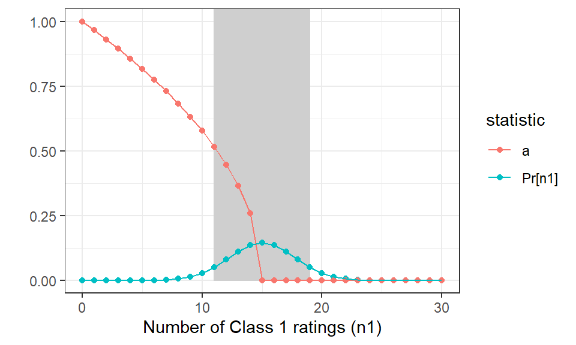
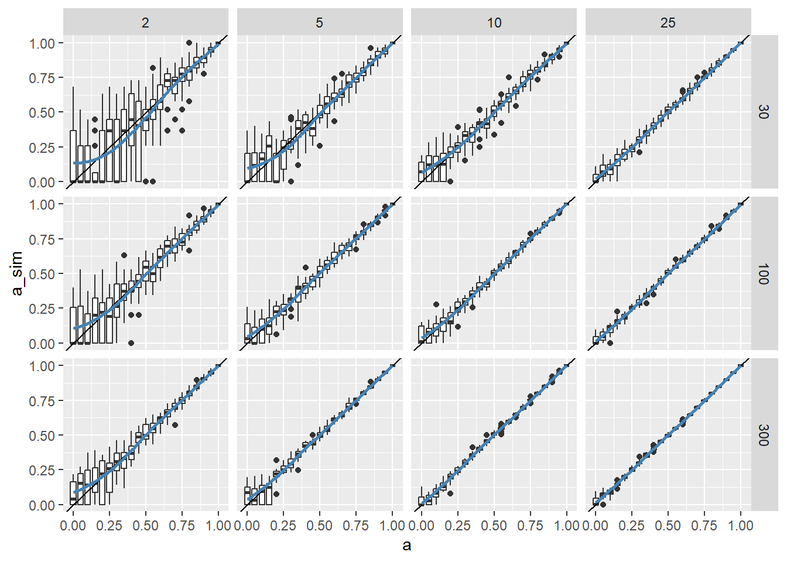

This chapter examines the assumptions and implications of the t-a-p model in detail to build a theoretical foundation for estimation and inference. This work also paves the way to connect the three parameter model to widely-used rater agreement statistics (kappas) and machine learning algorithms.
1 Introduction
Suppose that we have \(N\) subjects to be classified by at least two raters each, and each subject belongs (in truth) to one of two categories Class 1 or Class 0. For example, if faculty members review portfolios of student work, the two classes could be “pass” and “fail.” We often use ordered classifications like “A, B, C, D, F” or “Excellent, Good, Fair, Poor” but these can be converted to binary classifications by grouping the classes. For example “A, B, C” could be compared to “D, F” or “Excellent, Good” could be compared to “Fair, Poor.” There are also extensions of the t-a-p model that work directly on ordinal or non-binary categorical scales. The exposition is easiest to understand for the binary case, so we will start there.
We assume that each subject is independently assigned to one of the two classes by each of \(R\) observers (raters). For now, think of \(R\) as fixed, so that there are \(RN\) total ratings, but that condition is relaxed later on, so that the number of ratings per subject can vary, which is common in real data.
Rater-assigned categories are distinguished from true classes in notation by the use of hats to suggest an estimated value. Ratings of Class 1 are denoted Class 1, but some of them may be Class 0 in truth. This distinction between rated (estimated) values and true values leads to the idea of true/false positives/negatives and the confusion matrix described in the introductory chapter, reproduced here.
Table 1: The t-a-p model’s correspondence to the confusion matrix. Terms in parentheses are inaccurate ratings.
True C1
True C0
Classified C1
\(ta + (t\bar{a}p)\)
\((\bar{t}\bar{a}p)\)
Classified C0
\((t\bar{a}\bar{p})\)
\(\bar{t}a + (\bar{t}\bar{a}\bar{p})\)
The true positive rate of classification in Table 1 can be separated into ratings that are true for a good reason and those that are accidentally true. This chapter expands on that idea to reveal other properties of the t-a-p model and how some existing rater agreement statistics are special cases of it.
We will assume that an assigned rating corresponds to the belief of a rater. This rules out raters who are intentionally being deceptive, for example. Then we will say that a rater makes an accurate assignment of Class 1 or Class 0 for a subject if
the rater-assigned class is the true class, and
the rater has justification for the choice.
These requirements operationalize the Justified True Belief (JTB) definition of knowledge used by philosophers who study epistemology. Inaccurate ratings are those where one of the two listed conditions fails. If the rater’s belief is false and chooses the wrong category or if they choose the correct category but because of an invalid justification. The latter case corresponds loosely to Gettier-type problems, where the chain of reasoning reaches a correct conclusion, but because of flaws in perception the logic isn’t sound. A clear case of failing the justification requirement is if raters flip coins to choose categories. Coin flipping is entirely random, but even good raters have some randomness inherent to the classifications. That randomness is the usual starting point for chance-corrected agreement statistics.
The rating process just described lends itself to a tree diagram that illustrates three variables as conditional probabilities: (1) the true Class 1 rate \(t\), (2) rater accuracy \(a\), and (3) the probability \(p\) of choosing Class 1 when rating inaccurately. On the diagram, it’s convenient to use a bar over a variable to denote its complementary probability, e.g. \(\bar{a} = 1 - a\).
Figure 1: Assumed rating process showing average rates, where \(c\) is the rate of assigning Class 1 to subects, \(t\) the average true Class 1 rate, and \(a\) is average rater accuracy.
Each rating is conditional on a subject’s true classification (Class 1 or Class 0), which will often be unknown, so that we can only observe the rater-assigned categories \(C_{ij}\), where \(i = 1 \dots N\) are the subjects and \(j = 1 \dots R\) are the raters, who independently classify subjects as Class 1 or Class 0. Define \(k_i := \sum_j C_{ij}\) as the total number of ratings for subject \(i\), and the average of the classifications made by raters is \(c = \sum{C_{ij}}/(NR)\).
Example: A wine judge independently and honestly assesses a vintage for excellence. The two categories are Class 1 = “excellent” and Class 0 = “not excellent.” After judging four wines, the situation might be that in the table below.
Sample wine ratings showing normally unknown truth values.
Wine
Truth
Accurate?
Classification
1
Excellent
Yes
Excellent
2
Excellent
No
Not Excellent
3
Not Excellent
No
Not Excellent
4
Not Excellent
Yes
Not Excellent
5
Not Excellent
Yes
Not Excellent
If the judge makes an accurate assessment, the classification recorded matches the true value. But for the third wine, the judge got the correct answer even though the process was flawed and somewhat random (an inaccurate rating). For the second wine, the inaccuracy resulted in the wrong classification being assigned. Those two inaccurate cases are illustrated in the process diagram in the middle, marked Random.
2 Conditional Probabilities
The tree diagram in figure Figure 1 models the average assignments of ratings \(C_{ij}\) over subject \(i\) and rater \(j\), and can be read by multiplying the conditional probabilities on the edges from the top down to find the probability of a given classification being Class 1$.
If a subject is not classified accurately, the classification for that rater is assumed to be made at random, with probability \(p\) of choosing Class 1 regardless of the true class. So the conditional probability of a Class 1 classification when the subject really is Class 1 is \(\text{Pr}(\text{Assigned Class 1} | \text{True Class 1}) = a + \bar{a}p\). Similarly, \(\text{Pr}(\text{Assigned Class 0} | \text{True Class 0}) = a + \bar{a}p\). This model assumes that guess rates for the two classes are the same independent of the true classification. More complex models are introduced later.
The binary (Bernoulli) probability that for a given subject with a given true classification, a rater will assign a Class 1 rating is shown in the table below. This comes from reading the tree diagram from the top down, multiplying the branches.
Conditional probabilities of a single rater assigning a Class 1 rating to a subject.
True C1
True C0
Classified C1
\(a + \bar{a}p\)
\(\bar{a}p\)
We can use these probabilities to find the expected number of ratings of Class 1.
3 Binomial Mixtures
The rating process posed in the t-a-p model is illustrated with the tree diagram and table of example ratings above. But both of those entail the use of the hidden true classification value for each subject. There are cases where that can be known, but in general it is not. What we usually have to work with is a table of ratings, from which we must infer the hidden variables like rater accuracy. The collection the ratings under the t-a-p assumptions fall into a well-studied probability distribution called a binomial mixture.
Show the code
# set the parametersN_r =5# number of raters for each subject N_s =100# number of subjects (not used here)t = .3# fraction of subjects that are in fact class 1a = .7# probability of a rater rating a subject accuratelyp = .2# probability of a rater rating a subject as class 1 when rating inaccurately# find the conditional probabilities for each class# probabilities of a class 1 rating for a class 0 subject c0_probs =dbinom(0:N_r, N_r, prob = (1-a)*p)# probabilities of a class 1 rating for a class 1 subject c1_probs =dbinom(0:N_r, N_r, prob = a + (1-a)*p)# create the mixture with t as the mixing parametermixture = c0_probs * (1-t) + c1_probs * t# Plot the conditional probabilitiesplot(0:N_r, c0_probs, type="b", col="blue", pch=16, ylim=c(0, max(c(c0_probs, c1_probs, mixture))),ylab="Probability", xlab="Number of class 1 ratings for a given subject", main="Binomial Mixture Plot")# Add the second component (c1_probs)lines(0:N_r, c1_probs, type="b", col="red", pch=16)# Add the mixture as a black dashed linelines(0:N_r, mixture, type="b", col="black", lty=2, pch=16)# Add a legendlegend("topright", legend=c("Class 0 Probabilities", "Class 1 Probabilities", "Mixture"),col=c("blue", "red", "black"), lty=c(1, 1, 2), pch=16)
Figure 2: Binomial mixture showing the probability of the number of class 1 ratings for a given subject. In blue is the distribution for true-class 0 subjects, in red is the distribution for true-class 1 subjects, and the black line is the mixture based on relative proportions.
Figure 2 shows an example of how probabilities combine to create the mixture. Given the three t-a-p parameters plus the number of raters per subject, we apply the binomial probability density function using the probabilities found at the end of the previous section. The mixture is created by weighting these two distributions by their frequency in the sample space. In this case, the parameters are \(t = .3\), \(a = .7\), and \(p = .2\).
For true Class 1 cases, the probability of a rater assigning a Class 1 rating is \(ta + t\bar{a}p\), and for true Class 0 cases it is \(\bar{t}\bar{a}p\) (see the table at the end of the last section). Those are probabilities for a single rating. If we have \(R\) raters, then anywhere between zero and \(R\) of them could assign a Class 1 rating to a given subject. The binomial distribution gives the probability for each of those possible count outcomes. For true Class 1 subjects the probability of \(k\) raters assigning a Class 1 rating is
\[
\begin{aligned}
Pr(k | \text{True Class 1}) &= \binom{R}{k} (a + \bar{a}p)^k (1 - a - \bar{a}p)^{R - k} \\
&= \binom{R}{k} (a + \bar{a}p)^k (\bar{a} - \bar{a}p)^{R - k} \\
&= \binom{R}{k} (a + \bar{a}p)^k (\bar{a} \bar{p})^{R - k}
\end{aligned}
\]
That distribution is represented by the red line in Figure 2. Notice that the most outcome is that four of the five raters assign a Class 1 rating. The reason that’s not five is that the parameter \(p = .2\) means that for inaccurate ratings, the “guess” is much more likely to assign Class 0 than Class 1. The effect is to deflate the number of Class 1 ratings for true Class 1 subjects.
For true Class 0 cases (the blue line in the plot), it is
These are the two probability distributions are shown in Figure 2, with the given parameters applied. The code is included so that you can try variations on your own.
But there are not necessarily the same number of true Class 1 and Class 0 cases. The fraction of Class 1 cases is assumed to be \(t\). The mixture of the two is
This is the mixture distribution that is assumed to represent the count data of Class 1 ratings per subject. To proceed with an investigation of the t-a-p model, we first count up the number of Class 1 ratings for each subject. If there are the same number of raters for each subject, these counts will form a histogram that corresponds to the black dashed line in the figure, for some set of t-a-p parameters. The job then is to find out what those parameters are.
For a real data set, the red and blue plots in Figure 2 are assumed to exist, but are not directly accessible to us. Instead we can see something like the mixture (black dashed line). But even that isn’t exact, because it is subject to sampling error: the histogram of counts won’t exactly correspond to the ideal probabilities. The larger the number of subjects rated, the closer the empirical proportions will, in theory, converge to the ideal mixture distribution.
For general information on binomial mixtures of discrete data see Agresti (2003) chapter 14.
4 Simulation
The interactive app provided with the tapModel R package allows you to specify t-a-p parameters and generate a data set from them. Once the package is installed, you can run the app with tapModel::launchApp(). Navigate to the Simulate Data tab.
Figure 3: Rating distributions with t = .3, a = .7, p = .2. Plot A has 20 subjects and Plot B has 1000. The blue bars are the histograms of the simulated data and the orange dashed line is the true mixture probability distribution.
Figure 3 shows two count histograms with identical parameters except for the number of subjects (20 versus 1000). The histograms are the result of applying the t-a-p binomial mixture distribution with five raters on each subject and parameter set \((t = .3, a = .7, p = .2)\). Notice that the smaller sample size on the left (plot A) doesn’t match the distribution line as well as the one on the right. This is the effect of random sampling. The smaller the sample, the more likely it is that the empirical counts don’t look like the distribution.
This leaves us with two problems: how do we estimate the parameters, and how much should we trust the results? These are classical problems from statistics.
The accuracy rate \(a\) will affect the subject distributions. If \(a = 0\) the ratings will be distributed as \(\text{Bernoulli}(p)\), independently of the subjects being rated. If \(a=1\), then all raters agree on the true value for each subject. Therefore the way we can reconstruct \(a\) from data is through the distribution of the within-subject ratings. The method used here can be seen as a latent class model with binomial mixture distributions. For a nice discussion of these ideas in practice see Grilli et al. (2015), which helpfully notes that binomial mixtures are statistically identifiable if the number of cases exceeds a low threshold McLachlan & Peel (2000).
We would like to know the true proportion \(t\) of the subjects belonging to true Class 1 regardless of how they were rated, rater accuracy \(a\), and the proportion \(p\) of inaccurate assignments that are Class 1. That goal describes the general model illustrated in the following section.
5 Fitting the Model
The first question about the model illustrated in figure Figure 1 is whether it is computationally useful. Using known parameter values for \(t, a, p\) to generate simulated ratings, can we then recover the parameters from the data? The answer is yes, with some provisos. Given a data set \(c_{ij}\), we can fit a general model to estimate the three parameters \(t\), \(a\), and \(p\) using maximum likelihood to fit a binomial mixture model. The log likelihood function for the binomial mixture described by figure Figure 1 with \(N\) subjects and \(R_i\) raters for subject \(i\) is
where \(k_i=\sum_{j}C_{ij}\) is the number of Class 1 ratings for subject \(i\). The sum over the logs is justified by the assumption that ratings are independent (i.e. multiplying probabilities). The \(t\) and \(\bar{t}\) terms at the top of Equation 2 are the mixing proportions for the two classes.
The second equation in Equation 2 just rewrites the log-likelihood function more compactly to see the binomial mixture structure. The last equation is a more efficient way to calculate the likelihood, based on the observation that there are a limited number of pairs \((R_i,k_i)\) that can occur in the data. For example, if there are three raters for each subject, then the possible pairs are \((4,0), (4,1), \dots, (4,4)\), five unique combinations regardless of the number of subjects \(N\). The likelihood is a sum over the unique pairs, multiplying each log-likelihood for that pair by the number of times it occurs in the data, denoted here by \(n_u\). In other words, the rating combination \((R_u, k_u)\) occurs \(n_u\) times. Using that formulation speeds up estimation algorithms because it reduces the number of calculations needed to fit the model.
It is straightforward to implement the function in the Bayesian programming language Stan (Carpenter et al., 2017), using uniform \((0,1)\) priors for the three parameters (see the discussion section at the end of that paper to access the source code).
To test the computational feasibility of this method, ratings were simulated using a range of values of \(t\), \(a\), and \(p\). The 729 trials each simulated 300 subjects with five raters each, using all combinations of values ranging from .1 to .9 in increments of .1 for each of \(t\), \(a\), and \(p\). The Stan engine uses a Markov chain Monte Carlo (MCMC) algorithm to gather representative samples from the joint probability density of the three parameters. Each run used 1,000 iterations (800 after warm-up) with four chains each.
Figure 4: Box and whisker plots show parameter estimates from simulations of rater data \(t\)-\(a\)-\(p\) values ranging from .1 to .9. The diagonal line marks perfect estimates.
The accuracy measure \(a\) and the Class 1 “guess rate” \(p\) are stable across scenarios in figure Figure 4, but the estimated true fraction of Class 1 cases \(t\) is sensitive to values of \(a\) near zero. To see this, substitute \(a = 0\) into the likelihood function to get
Since the two terms at the top are the same, and we sum \(t + \bar{t} = 1\), the \(t\) drops out of the formula. So \(t\) is under-determined when \(a = 0\), and we should expect poor behavior as \(a\) nears zero. This is intuitive: if the raters are only guessing, they should give us no information about the true Class 1 rate. If the data in figure Figure 4 are filtered to \(a > .2\) the estimates of \(t\) greatly improve. Aside from extreme values of \(a\) affecting the estimation of \(t\), a visual inspection of the scatter plots of the parameter estimates shows no correlations.
The estimates in Figure 4 are taken from averages of the posterior parameter distributions, which is convenient, but sometimes hides the uncertainty in the estimates because of the limited range of possible values on [0,1]. When making inferences from a real data set, it’s useful to look at the full posterior distributions of the parameters to see if they are multi-modal or have other complications.
6 Exact Formulas for Accuracy
As we’ll see in Chapter 3, the Fliess Kappa illustrates an algorithm for calculating accuracy in the case when \(t = p\). We can find exact “closed-form” formulas for special cases, which can be useful for theoretical purposes. Consider the two-rater case on \(N_s\) subjects, where the number of cases where both raters assigned Class 0 is \(n_0\), the mixed-rating case is \(n_1\), and the count of cases with both Class 1 is \(N_2\). The log likelihood function is
\[
\begin{aligned}
\ell(t,a,p)
&= n_0\log [t(\bar{a}\bar{p})^2+ \bar{t}(1-\bar{a}p)^2]\\
&+ n_1\log 2[t\bar{a}\bar{p}(a+\bar{a}p)+ \bar{t}\bar{a}p(1-\bar{a}p)] \\
&+ n_2\log [t(a+\bar{a}p)^2+ \bar{t}(\bar{a}p)^2].
\end{aligned}
\] If we further assume that \(t = p = 1/2\), after some simplification we arrive at
\[
\begin{aligned}
\ell(t = 1/2,a,p = 1/2)
&= n_0 (\log (1+a^2) - 2)\\
&+ n_1\log(1 - a^2) - 1 \\
&+ n_2 (\log (1 + a^2) - 2),
\end{aligned}
\] where we assume that the base for the log is \(1/2\) (motivation for that choice is found in Chapter 5). When the log likelihood is maximized, the derivative is assumed to be zero, so we differentiate with respect to \(a\) and obtain
\[
\begin{aligned}
\frac{\ell(a)}{\partial a}
&= 2a \left( \frac{n_0 + n_2}{1+a^2} -\frac{n_1}{1-a^2} \right)
\end{aligned}.
\] Clearly, \(a=0\) is one solution. The other is
where \(\eta_i = n_i/N_r\) is the proportion of cases with \(i\) ratings of Class 1. If there are no mismatched ratings, then \(\eta_1=0\), and \(a = 1\). If \(\eta_1 = 1/2\), then the ratings look like coin flips, and \(a = 0\). The form of Equation 3 represents \(a^2\) as a linear combination of match rates and mismatch rates. In fact, for unbiased raters (\(t=p\)) using a fixed \(t\) and number of raters \(R\), we can derive the coefficients \(\beta_k\) so that
The derivation of the formula for \(\beta_k\) is found in the Appendix. The linear models for \(a^2\) are useful as theoretical tools, e.g. sensitivity analysis, but shouldn’t be used for direct estimation of accuracy, since the \(t=p\) coefficient has to be specified, and the computation is sensitive to violations of the unbiased rater assumption. The supporting R package contains a function tapModel::exact_accuracy_coefs(N_r, tp) that computes the \(\beta_k\) coefficients.
This result shows that when the unbiased rater (\(t=p\)) condition is met, the the Fleiss kappa can be thought of as a weighted additive voting method.
7 Identifiability
Binomial mixtures are not always identifiable, meaning that the data don’t contain enough information to uniquely determine the parameters. If we fit two binomial distributions to the data with complete flexibility, each will have a “success rate” for the underlying Bernoulli trial, which determines the distribution’s mean and variance. There is also a weight parameter that defines the mixture; that determines the heights of the respective histograms of the two binomials. A simple data set would comprise the counts of Class 1 ratings for each subject. If the raters have reasonably high accuracy, a histogram of ratings will have a peak on the right, where a large fraction of raters of true Class 1 ratings agree. The average might be that 75 of 100 raters, on average agree that it’s Class 1. For true Class 0 cases, the raters might have an average of 25 of 100 ratings of Class 1 (erroneous ratings). The chapter on the interactive application shows how to simulate such data. It looks like this:
Sample ratings with 100 raters and 1000 subject, with high rating accuracy. It shows a clear separation of the two binomial distributions.
If we ask a generic optimization algorithm for the statistics to describe the two binomials, we can get two valid answers, e.g. distribution means of \(\mu_0 = 25\) and \(\mu_1= 75\) or \(\mu_0 = 75\) and \(\mu_1 = 25\). This is called “label-swapping,” because the solution doesn’t care which of the classes is which. One ad hoc solution is to include a restriction that the success rate for one of the distributions is greater than the other, but this is computationally awkward. The t-a-p model avoids this problem because the accuracy \(a\) is the non-negative difference between the means of the two binomials. In the example above, \(a = .5 = (75-25)/100\). Since \(a\) is bounded by 0 and 1, the model is generally identifiable.
Non-identifiable cases do occur when one or more of the t-a-p parameters is zero or one. If \(a = 1\), it doesn’t matter what \(p\) is, for example. This can also cause problems when a parameter is close to one or zero. For an example of that, see Chapter 4: The Kappa Paradox. These issues can be investigated using Bayesian MCMC estimation, which provides a full posterior distribution for the parameters. The distribution may be multi-modal if there are two competing solutions. This gives us a way to detect degenerate solutions and look for a different model if desired. These degenerate cases aside, the tap parameterization of the binomial mixture has an advantage over generic optimization.
We can add more parameters to the basic t-a-p model. For example, we might split accuracy into Class 1 accuracy and Class 0 accuracy, as is illustrated in Chapter 4. These additions can lead to multiple solutions, which can often be detected from the MCMC distributions of parameters. This topic needs more development.
8 The Dunning-Kruger Horizon
The Dunning–Kruger effect (Kruger & Dunning, 1999) is the tendency of people with low ability in some domain to overestimate their own ability (ignorance creates meta-ignorance). It turns out to be a useful metaphor for what happens when we estimate rater accuracy, because low rater accuracy degrades estimates of accuracy. We can visualize this effect using the linear model derived above for for exactly calculating accuracy (\(a\)) when \(p=t=1/2\) for two raters. If we suppose that thirty subjects are being rated (\(N_s=30\)), the t-a-p model assumes a binomial mixture distribution for the counts of Class 1 ratings across all subjects. In particular, if accuracy is zero (\(a=0\)), the count \(n_1\) of the number of subjects that have split ratings (one Class 1 and one Class 0) will be distributed as a simple binomial with mean \(15 = 30(.5)\). With zero accuracy, the raters are essentially flipping coins. The question is, given this coin-flipping distribution for the results of the ratings, what are the possible accuracy ratings that reflect those random samples? Since we have an exact formula for the accuracy, we can draw a picture.
Show the code
N_s =30df <-tibble( n1 =0:30,`Pr[n1]`=dbinom(n1, N_s, .5),a =if_else(n1*2>= N_s, 0, sqrt((N_s -2*n1)/N_s)))df |>gather(statistic, value, -n1) |>ggplot(aes(x = n1, y = value, group = statistic, color = statistic)) +geom_rect(xmin =11, xmax =19, ymin =0, ymax =Inf, fill ="#CCCCCC22", color ="#CCCCCC22") +geom_point() +geom_line() +theme_bw() +xlab("Number of Class 1 ratings (n1)") +ylab("")

Figure 5: Illustrating the range of accuracy estimates from random (a = 0, p = .5) ratings of 30 subjects with two raters each. The key statistic is how many mixed ratings n1 (one of each class) are generated, and the blue line shows the probability of each n1 occuring. The shaded region captures 90% of the distribution. The red line shows the accuracy estimate resulting from the sample.
The plot in Figure 5 shows how bad our estimate of accuracy can be for random ratings. Half of the time the count of mixed ratings \(n_1\) will be greater than the mean of 15, and we’ll get the correct estimate of \(a = 0\). The other half of the time, when the number of mismatched ratings is less than 15, the estimate for accuracy quickly increases. We can see from the plot that there’s a significant chance that the estimated \(a \ge .25\). At the left edge of the shaded area, where \(n_1 = 11\), there is a 5% chance of this outcome, and the resulting accuracy estimate is a little more than .5.
The t-a-p model is asymetrical with respect to accuracy. If the ratings are 100% accurate, we’ll get the correct answer of \(a = 1\) every time. But when the accuracy is zero, we’ll get a significant overestimate of \(a\) almost half the time. This effect produces a “zone of ignorance” in the following sense. If we can’t a priori rule out a very low accuracy, then as a precautionary measure we should entertain the idea that the ratings are purely random. Maybe something went wrong with the raters or coding or data transmission. Maybe the subject IDs got mixed up. If it’s possible that the ratings could be random, then we must condider how large an estimate of accuracy can be in that condition. That depends on the sample size and \(p\). Assuming \(p=.5\) is not universally applicable, but it’s a reasonable reference point.
If we choose the 5% mark as the cutoff value, as in Figure 5, then given the number of subjects and average number of ratings, we can simulate the largest (worst) \(a\) that can occur in those conditions at that threshold. I’ll call the resulting value of \(a\) the “DK horizon” as a nod to Dunning and Kruger. The analogy isn’t perfect, but the idea is that if accuracy (like expertise) is low enough, a reversal happens, where our estimates of the accuracy increase instead of decrease.
For the example here, the DK horizon is \(a = .5\), meaning with 30 subjects and 2 raters each, any result that has \(a \le .5\) is highly suspect; we could be looking at the result of coin-flipping raters. The DK horizon is a veil of ignorance that prevents us from interpreting the t-a-p model coefficients when accuracy is too low. The horizon is affected by sample size, so we can do something like a power analysis to estimate where the DK horizon is.
Show the code
sampled_a <-read_csv("data/a_sim_exact.csv")sampled_a |>ggplot(aes(x = a, y = a_sim, group = a)) +geom_boxplot() +geom_abline() +geom_smooth(aes(x = a, y = a_sim, group =1), se =FALSE, color ="steelblue", linewidth = .9) +facet_grid(N_s ~ N_r)

Figure 6: Box plots showing the maximum likelihood estimate for accuracy (a) from samples drawn from a tap model with parameters t = p = 1/2 and a as shown on the horizontal axis. The 2, 5, 10, and 25 column headers are the number of raters for each subject, and the row headers along the right side are the number of subjects rated by each rater. The blue line is the average accuracy for the sampled ratings.
As is usually the case, larger sample sizes reduce sampling error. With 300 subjects and 25 raters each (bottom right), there’s hardly any sampling error. But for small sample sizes, the sampling error noticiably increases as accuracy approaches zero. For the 2-rater, 3-subject case in the top left of Figure 6, when \(a < .5\), the estimation error quickly becomes so bad as to make the estimation worthless. Intuitively, if we got an estimate of \(a = .3\), say, the best we can say is that probably the accuracy is somewhere between zero and one half. For the 5-rater, 30-subject case, this “zone of ignorance” is not as bad, with the DK horizon at about \(a =.25\). This is useful knowledge when interpreting parameter estimates from a small sample of ratings.
9 Overdispersion
The basic t-a-p model assumes fixed averages of the three parameters over raters and subjects. The most sensible of these assumptions is that there is a single value for \(t\) that represents the fraction of Class 1 cases. That leaves two parameters that are certainly oversimplified in the tap model, so that counts of Class 1 ratings per subject are likely to have more variance than a binomial model would. This is due to anticipated variance in rater ability and the difficulty in rating subjects, resulting in overdispersion. A general approach to this problem is to allow each rater to have a different accuracy rate \(a_j\) and each subject to have a different guessing rate \(p_i\). This is a hierarchical model, which is described in Chapter 5: Hierarchical Models. Other approaches include using a beta-binomial prior for parameters, Williams (1975). Also see Ascari & Migliorati (2021).
10 Other Properties
As is shown in Appendix A, rater accuracy \(a\) is proportional to the correlation between the true and assigned classifications. If \(C\) is the true classification and \(T\) is the assigned classification, then
\[ \text{Cor}(T, C) = a\frac{\sigma_T}{\sigma_C} \]
Related properties can be found in the appendix.
References
Agresti, A. (2003). Categorical data analysis (Vol. 482). John Wiley & Sons.
Ascari, R., & Migliorati, S. (2021). A new regression model for overdispersed binomial data accounting for outliers and an excess of zeros. Statistics in Medicine, 40(17), 3895–3914.
Carpenter, B., Gelman, A., Hoffman, M. D., Lee, D., Goodrich, B., Betancourt, M., Brubaker, M., Guo, J., Li, P., & Riddell, A. (2017). Stan: A probabilistic programming language. Journal of Statistical Software, 76(1).
Grilli, L., Rampichini, C., & Varriale, R. (2015). Binomial mixture modeling of university credits. Communications in Statistics - Theory and Methods, 44(22), 4866–4879. https://doi.org/10.1080/03610926.2013.804565
Kruger, J., & Dunning, D. (1999). Unskilled and unaware of it: How difficulties in recognizing one’s own incompetence lead to inflated self-assessments. Journal of Personality and Social Psychology, 77(6), 1121.
McLachlan, G., & Peel, D. (2000). Wiley series in probability and statistics. Finite Mixture Models, 420–427.
Williams, D. (1975). 394: The analysis of binary responses from toxicological experiments involving reproduction and teratogenicity. Biometrics, 949–952.